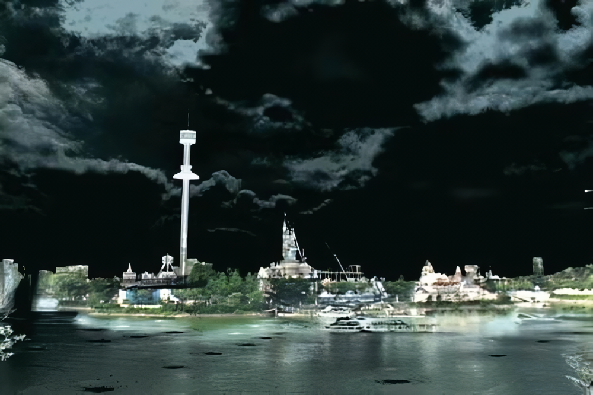
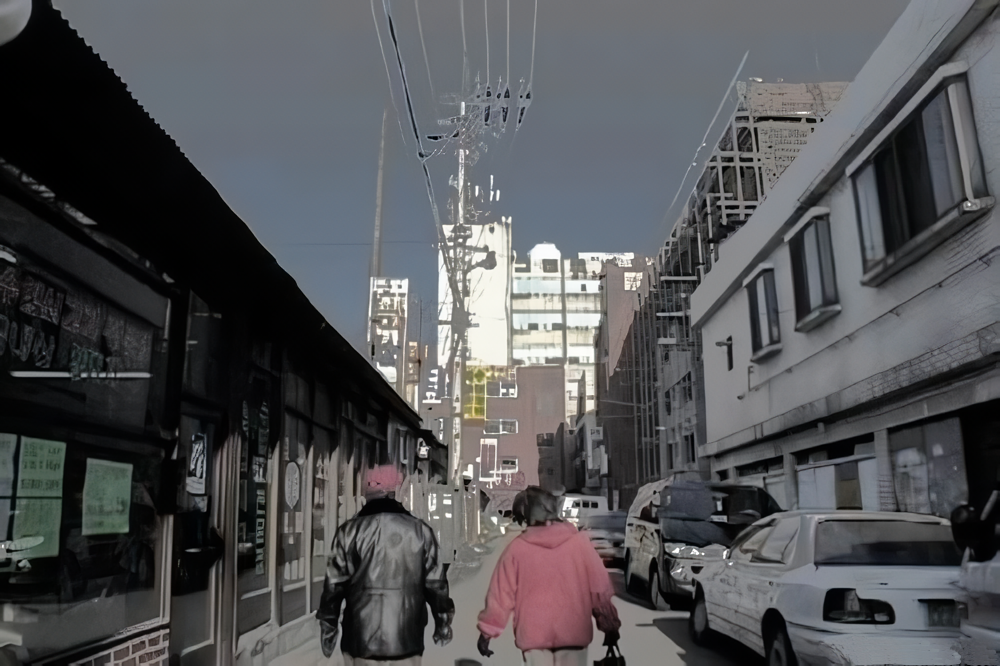
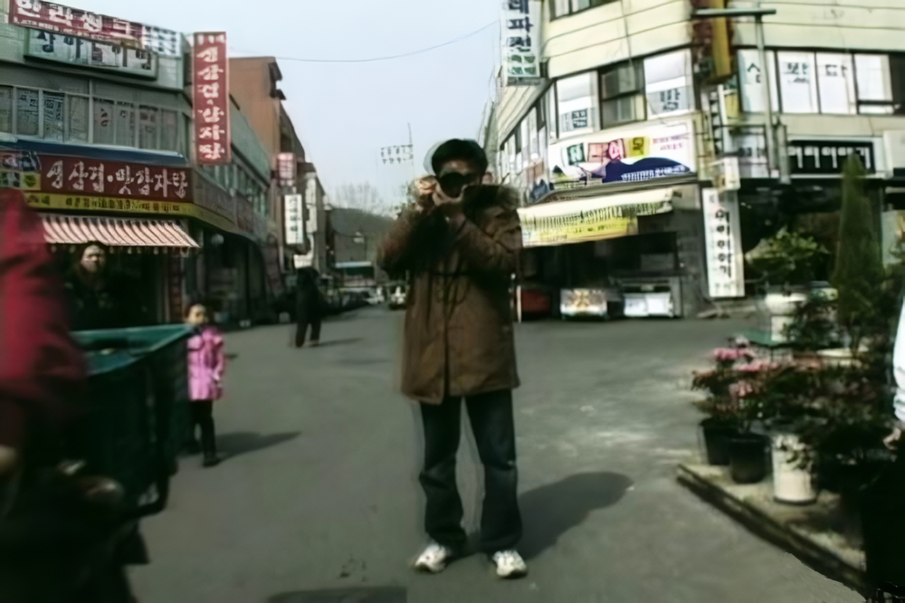
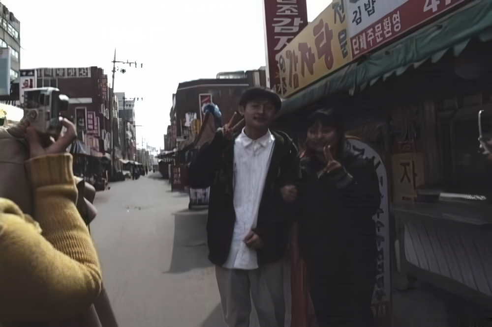
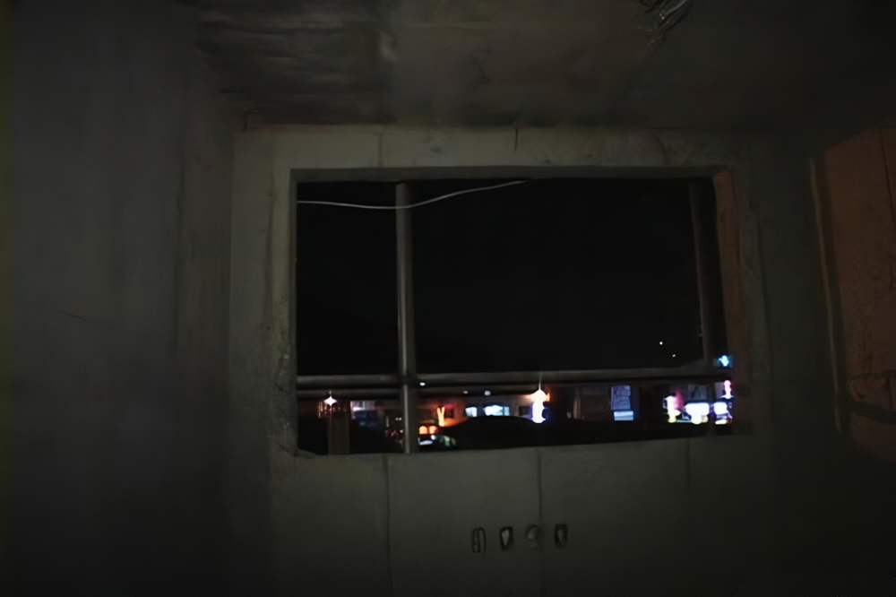
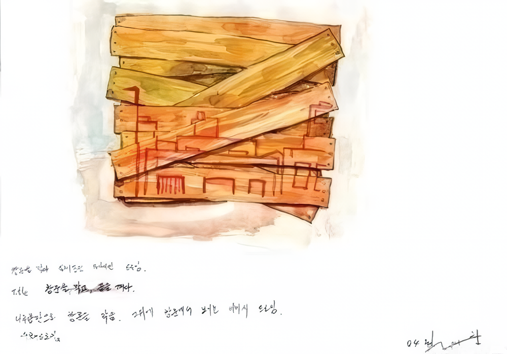
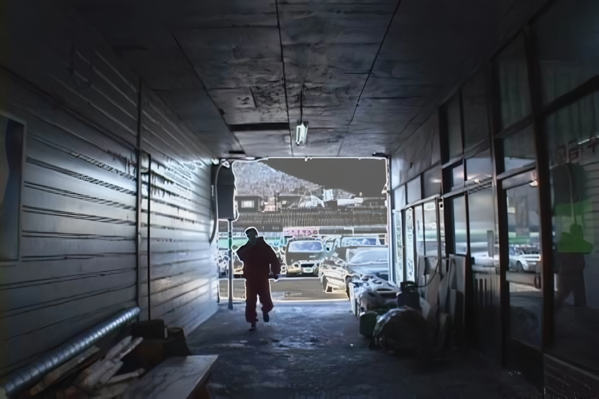
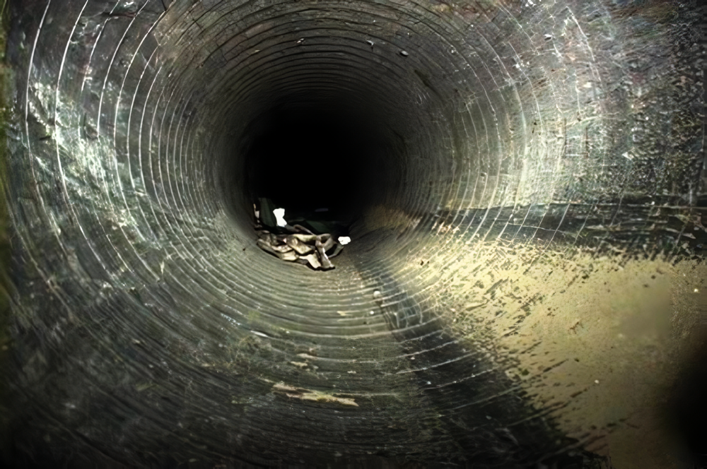
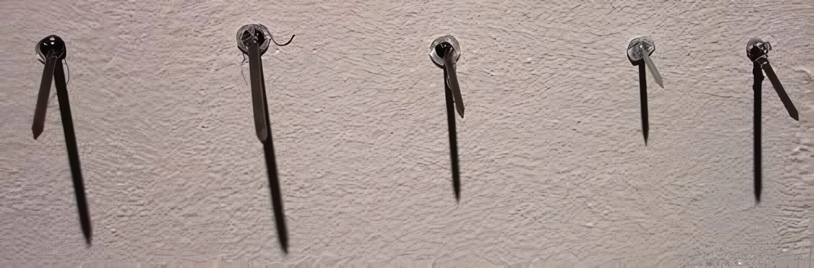
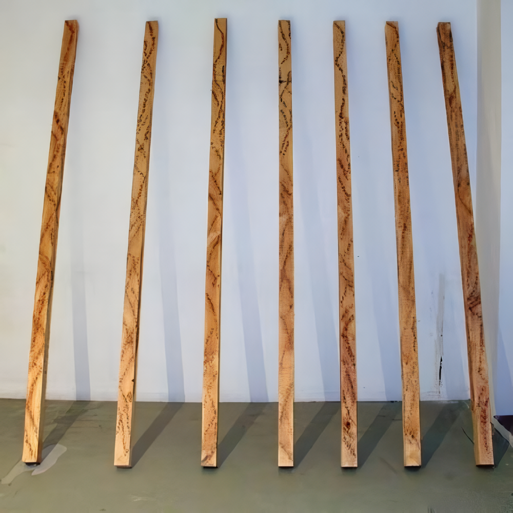

|
2004 exhibition |
|
|
2004 스톤앤워터 전시지원공모 선정작 첫번째 석수시장 연계 프로젝트 ■ 전시기간: 2004년 4월 17일부터 5월 9일까지
■ 기획: 최
재 훈 (작가 홈페이지
the world_set(가제) 展는 ‘지금 살고있는 이 세계가 진짜일까?’ 라는 작가의 삶에 대한 의문에서부터 출발한다. 이 말에 콧방귀를 뀌며 ‘이 세계 말고 또 다른 세계가 있다면 보여주세요!’ 하고 반문하는 사람들도 있을 것이다. 이것이 바로 이 전시의 핵심이다. 석수시장을 지나쳐온 관람객은 스톤앤워터 전시장에서 자신이 조금 전 존재했던 석수시장과 현재 존재하는 공간에 대한 또 다른 세계의 가능성을 체험하게 된다. 한가닥 껍질을 벗겨내어 알몸으로 등장하는 세계, 색다른 옷을 입은 세계, 실제로 진행된 허무맹랑한 행위들로 일상의 이미지가 전복된 세계 등 작가가 재창조한 세계는 실 공간(전시장 안)과 허상의 공간(영상 매체 속)을 어울러 표현된다. 이 낯선 세계의 체험자(관람객)는 그동안 보지 못한 현실과 그 이면들을 자각하게 될 것이다. 무언갈 자각하고픈 큐레이터 심소미 |
|
|
 the world, chanel video, 2min 30sec, 2003 |
|
|
<최재훈 작가의 노트中..>........ world set ?
영화를 보다보면 저것이 현실인지 가상의 세계인지 혹은 진실인지 거짓인지 모호해지는 경험을 느낀다. 그리고 그 영화가 촬영된 SET장에 기념촬영이라도 할 마음으로 가서 그곳을 보고나면 모든 것이 분명해지면서 내 눈이 얼마나 속았는지를 느끼며 또 하나의 현실이 아니라 영화를 통해 가상(인위적으로 계획된)의 세계를 보았다는 것에 대한 즐거움을 느끼게 된다. 물론 이것은 모든 영화에 해당되는 것은 아니다. 단지 몇몇 영화이지만 내가 중요하게 얘기하고자하는 것은 SET이다. 비단(非但) 영화뿐만 아니라 살아가면서 나는 가끔씩 내 주변에 대한 불확실성을 갖는다. 이곳이 정말 서울일까. 나의 집일까? 식당일까? 학교일까?......
그러한 질문의 통합된 극단적인 또 하나의 질문은 우리가 흔히 내뱉는 ꡒ꿈인가? 생시인가?ꡓ이기도 하겠지만 여기서 중요한 것은 내 자신의 삶에 대한 반문이다. 내 삶이 믿기지 않는 , 그러한 경험을 하고 있는 사람들은 너무나 많을 것이다.
기쁘거나 슬프거나 아프거나 괴롭거나 즐겁거나 그 어떠한 감정에서도 현재에 대한 불확실성은 존재한다. 단지 우리는 믿어야하기 때문에 , 그것이 눈에 보이는 것이기 때문에 , 단지 나의 피부조직들이 느끼기 때문에 따르고 확신 속에서 살아간다. 나는 단 한번의 의문을 품고 이 작업을 시작했다. 이 모든 것이 진짜일까....
set 같은 세상에서 ...2003년 11월 22일 최재훈
|
|
|
 최재훈_the suksoo World+입구를 찾아서_단채널 비디오 영상_2004  최재훈_석수시장 퍼포먼스_단채널 비디오 영상_2004  최재훈_석수시장 퍼포먼스_단채널 비디오 영상_2004  최재훈 the suksoo World + 입구를 찾아서, 단채널 비디오 영상 2004 |
|
|
 최재훈 <창문을 막고, 꿈을 깨다> 전시작 에스키스-전시장 창문에 나무설치 후 드로잉. 2004
1. 검은 분수가 보이는 호수공원.
2. 반전-그로데스크 스펙타클.
3. 비명.
4. 어둠 또는 망각.
 최재훈_the suksoo World+입구를 찾아서_단채널 비디오 영상_2004  최재훈_the suksoo World+입구를 찾아서_단채널 비디오 영상_2004  최재훈_못(callosity)_못과 못을 위한 드로잉_2004  최재훈_기둥을 세우고, 꿈을 깨다_전시장 벽면에 드로잉 된 나무기둥_가변설치_2004
5. 닫힌 감각의 제국에서 열린 감각의 제국으로 ● 예술은 어디 있는가? 예술을 어디에서 찾는가? 누군가 이렇게 외쳤다. "나의 삶은 총체적 예술이다!" 나의 삶. 살아가는 것. 살아있다는 것. 이것이야말로 가장 흥분되고 아름답고 숭고하며 감동적인 예술이란 말이다. 또한 삶이야말로 가장 지리멸렬하고 비열하며, 부조리하고 추한 예술이기도 하다. 예술은 자유로운 생의 찬미(讚美)이면서 부자유스러운 생에 대한 찬악(讚惡)일 뿐. 서늘한 시체는 아니다. 그러므로 예술은 아름다움과 추함을 언어로서 형상으로 소리로서 온몸으로 드러내는 삶의 메신저와 같은 것이다. 이것으로써 예술은 자본주의가 드러내는 자본의 메신저들과는 뚜렷하게 구별된다. ● 예술가란 감각이 살아있어야 하는 자이다. 살아있는 감각으로 죽음의 공포를 이겨내고 살아있는 감각으로 깨어서 의심하는 자이다. 예술가들은 그러한 열린 감각을 통해 삶을 총체적인 예술로 만들어 내어야 한다. 나는 이들을 '열린 감각의 제국의 메신저'로 부르고 싶다. 최재훈의 하나의 메신저이기에 충분한 자질을 가진 신진작가임에 틀림없다. 열린 감각을 가지고 나의 삶의 주변을 살피고 나아가 세상을 살피고 더 나아가 우주를 살피는 일. 그것이 예술가들의 작업이다. 그런 작업을 최재훈이 앞으로 계속 보여주기를 기대해 본다.
이명훈
안양의 재래시장내 보충공간 스톤앤워터에서 시작하는 최재훈의 영상설치전 제목이다. 최재훈은 젊은 미술가이다. 그는 2003년 경원대학교 서양화과를 졸업하고 본교대학원에 다니며 줄곳 영상매체에 매달려있다. 그러다 2004년 스톤앤워터 지원공모전에 선정되면서 솨락해 가는 재래시장(석수시장)을 기록하고 해석하고 편집하고 다시 덧칠해서 그만의 독특한 세계를 만들어 냈다. 그의 작업은 영상과 사진과 회화가 얽히고, 나무와 못등 건축자제들로 설치와 드로잉을 하고 소리와 빛으로 혼돈을 만들어 놓고 “입구가 어디냐?“ 라고 관객들에게 묻는다. 그는 마치 놀이공원의 롤러코스트를 타고 석수시장 구석구석을 누비며 입구를 찾는다. 어느 순간 땅으로 떨어지는 것 같기도 하고, 공중에 매달린 듯한 느낌을 주면서 순간적인 짜릿함을 제공하는 롤러코스트에 매달린 사람들의 비명소리는 석수시장에서 입구를 찾는 작가의 영상설치와 어우러져 묘한 또는우울한 우리내 삶을 이야기한다. 요몇달간 우리국민 모두는 롤러코스트를 타고 내달렸다. 탄핵정국에서 415총선으로 다시 헌제의 판결정국으로 치달리고 있다. 한번쯤 의심해 보자.지금우리가 사는세상이 set아닌가?하고... 진짜 세상이란게 존재하기나 한건지 의심하며 셑트장 같이 변해가는 현대사회의 단면도를 관객들에게 제시한다. 4월17일부터 5월 9일까지 안양에 있는 스톤앤워터에서 열리는 '더 월드셋-최재훈 영상설치전‘의 단면이다. 그는 토요일과 일요일 전시장을 지키며 관객들과 입구를 찾으며 소통하려 한다. 작품을 감상하는데 무슨 왕도가 있겠는가,전시장을 찾는 사람마다 각각의 경험과 삶을 대하는 방식과 그날의 기분에 따라 천차만별의 세상읽기가 가능하니 어려워 마시고 발품을 파시라. 세상에 꽁자가 없다는데 발품정도 팔아 잠품 감상하시고 시장구경도 하시라! 스톤앤워터 객원 큐레이터 이명훈씨말을 빌자면 “예술가란 감각이 살아있어야 하는 자이다. 살아있는 감각으로 죽음의 공포를 이겨내고 살아있는 감각으로 깨어서 의심하는 자이다. 예술가들은 그러한 열린 감각을 통해 삶을 총체적인 예술로 만들어 내어야 한다. 나는 이들을 ‘열린 감각의 제국의 메신저’로 부르고 싶다. 최재훈의 하나의 메신저이기에 충분한 자질을 가진 신진작가임에 틀림없다.“ 라고 말한다. 먹고 살기도 힘들지만 예술하기 무지무지 힘는 나라에서 관객없는 전시장을 운영한다는건 정말 set 같은 세상이다.
박찬응
|
|

| ||||||||||||||||||||||||||
|
|
 about us
about us